Webmail that sorts itself, sends on time and answers to you.
Zajel Mail brings your mail, calendar and contacts into one fast workspace on your own Stalwart server. Zajel, your agent, reads your day and proposes what to do. Jev sorts your Inbox and runs the rules you write in plain English. Nothing leaves your control.
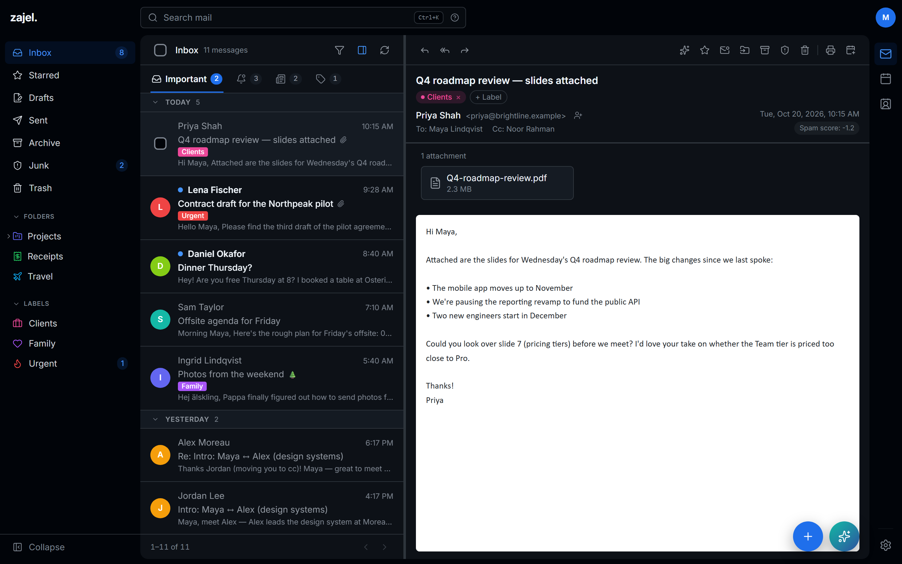
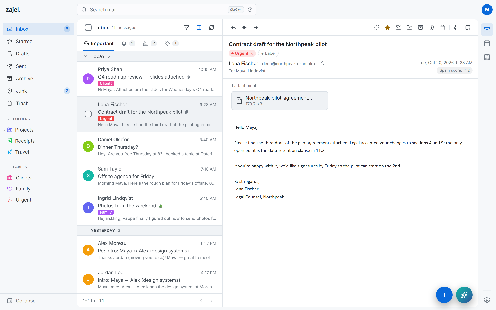
Built on open standards
- JMAP
- CalDAV
- JSContact
- Sieve
- iCalendar
- WebAuthn
- Stalwart
An Inbox that keeps what matters on top.
Mail splits into Important, Updates, Newsletters and Promotions, each with its own unread count. Sort by dragging, with Move to tab, or let Jev do it. Messages never leave your Inbox; a tab only changes where you see them.
- Search everything from any page with Ctrl K or /, across every folder, with filters you can clear in one click.
- Sign-in codes, found for you. The code sits above the message with a Copy button that can send the email to Trash too.
- Private by default. Remote images load through your server, and messages render in a sandbox with scripts off.
- Remind Me Later parks a message until later today, tomorrow, the weekend or next week.
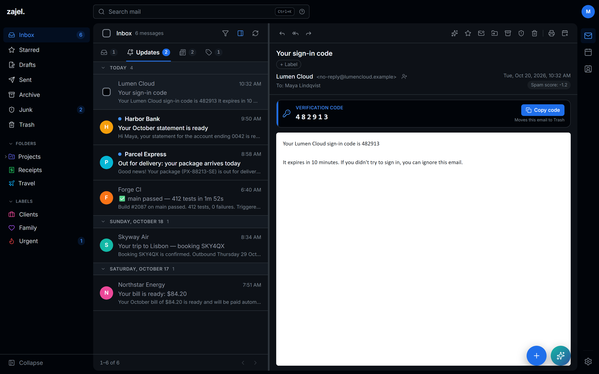
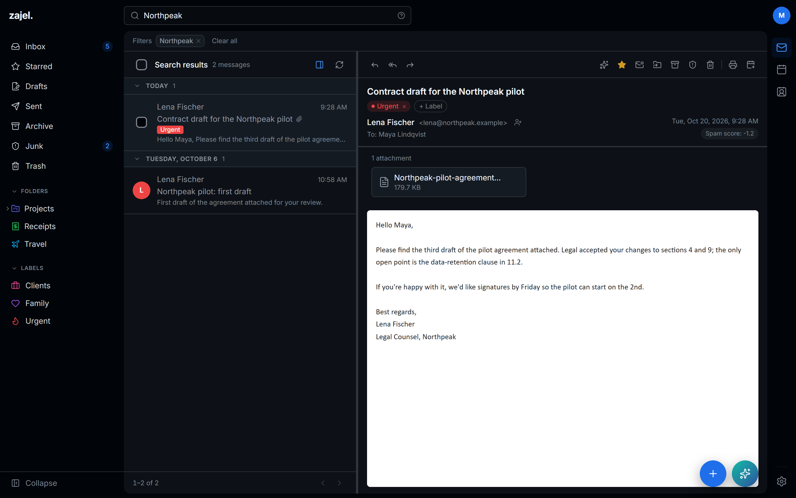
Send it later. Take it back.
The composer opens in the corner, above the message you're answering, with everything you need in its toolbar and nothing you don't.
- Send later: tomorrow morning, tomorrow afternoon, Monday, or any date and time. Your server sends it, so it goes out even with every tab closed.
- Undo send gives you 5 to 30 seconds to change your mind.
- Rich text, recipient chips, attachments, emoji, importance and a signature for each identity.
- One + button starts a message, an event or a contact from any page.
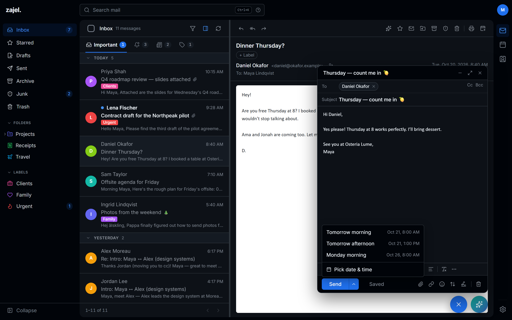
It reads your day. You make the calls.
Zajel searches your whole mailbox and calendar, a step at a time, until it can answer. It summarises, prepares and drafts, and it changes nothing until you confirm.
- Events and deletions arrive as cards that name the event and the date, and apply only when you click.
- Tasks go where you work: Todoist, Linear, Notion, a webhook or an MCP bridge, after you confirm.
- Your choice of model. OpenAI's GPT-5.6, sent with
store: false, or any Ollama model, including one on your own machine.
gpt-5.6-terragpt-5.6-lunaollama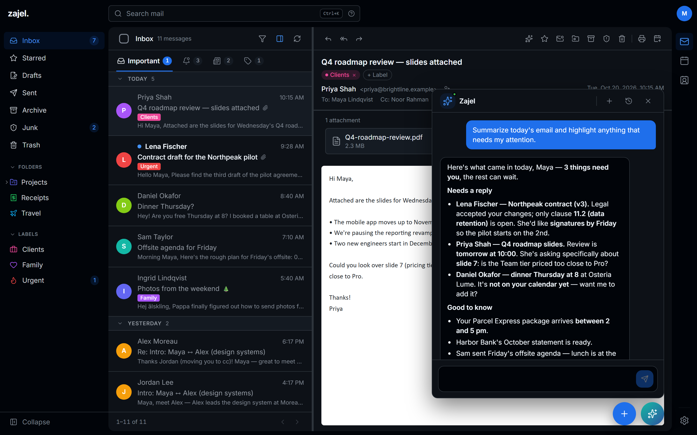
Rules you can write in a sentence.
Jev is TypeSafe's decision model. It judges each new email once and answers with probabilities, so Zajel Mail can sort your Inbox, run plain-English rules and give a second opinion on spam.
It's an invoice, a receipt or a request for payment
60% Normal
80% Strict
95%
- Sorts new mail into tabs, and shows why. Unsure picks stay in Important, so nothing hides.
- Learns from you. It never moves mail you sorted, your moves teach it, and pinned senders skip it entirely.
- Spam and phishing checks beside Stalwart's filter: watch first, then let it act, never on your contacts.
- Try it first. See where your last 200 emails would go before switching it on, account by account.
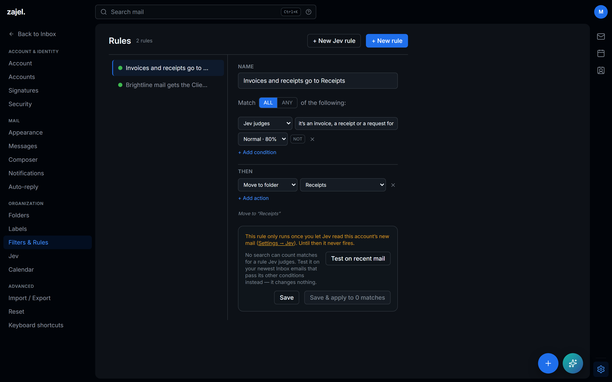
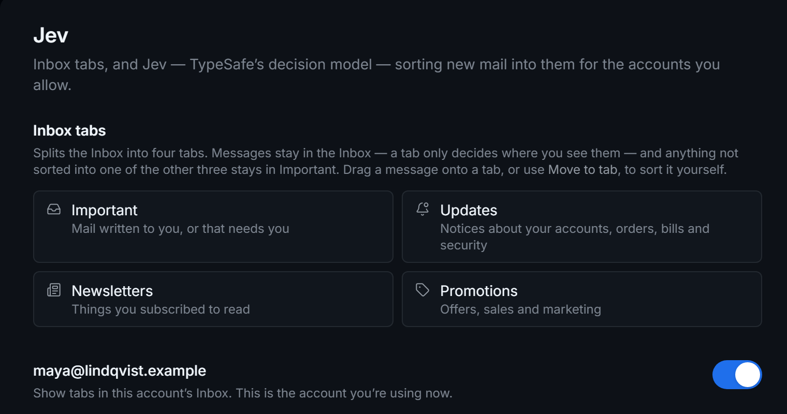
Your CalDAV calendars, at a glance.
Month, week, work week, 3-day and day views over every calendar on your server, each in its own colour. It remembers the view you like.
- Invitations show as an RSVP card right in the email.
- Add to calendar turns "dinner Thursday at 8" into an event.
- Reminders and notifications for what's coming up, and for anything new or changed.
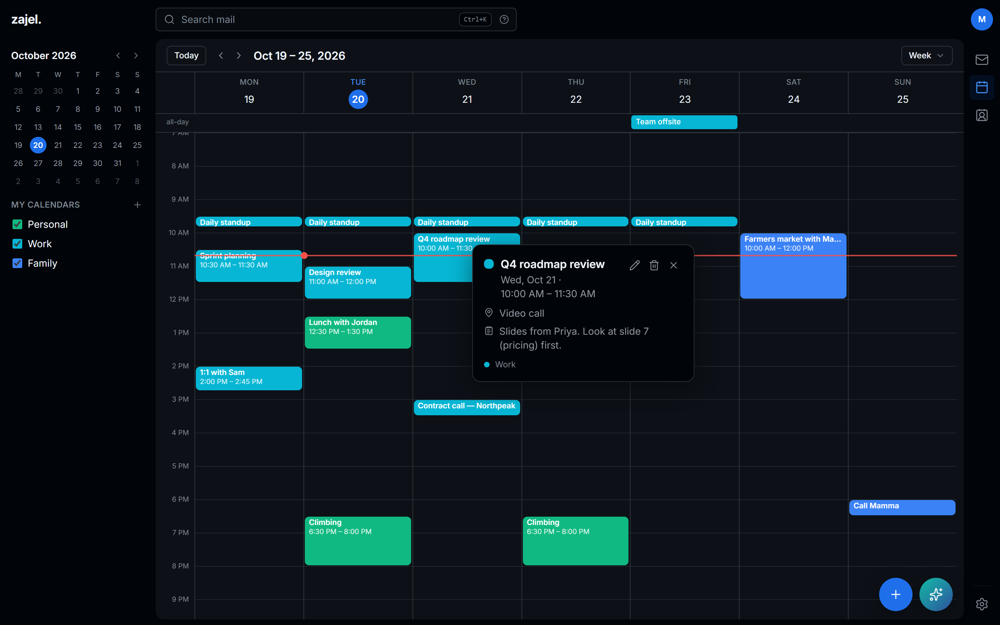
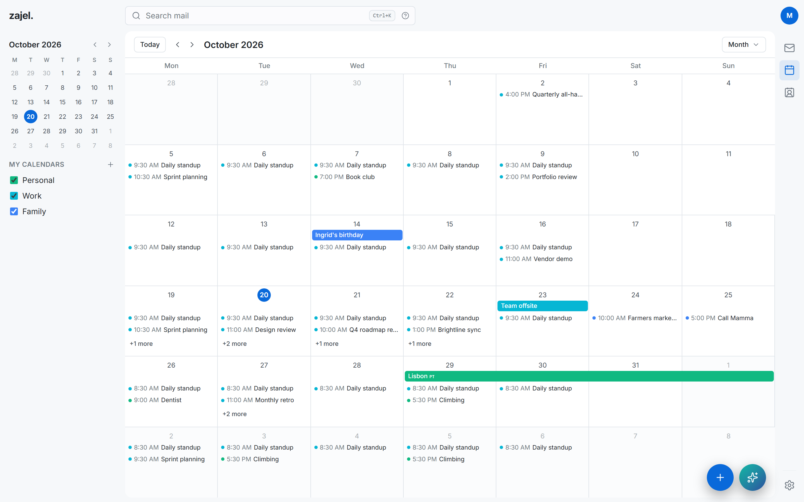
One address book, everywhere you are.
Contacts live in Stalwart, so they stay in sync with your phone and any CardDAV app. They load with the page, so they're there the moment you click.
- Lists for teams, family or the offsite crew, managed right from each card.
- Import from Apple and Google with vCard or CSV, and a preview of every row before anything is written.
- Compose email from any contact in one click.
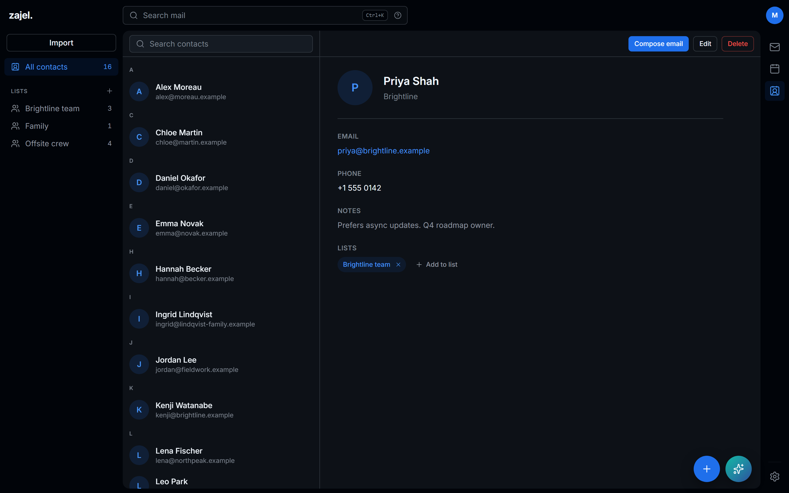
Every folder gets an icon. Every theme gets care.
Pick an icon for any folder or label from the full Lucide set of about 1,900, searchable by name and keyword, in the colour you choose.
- Dark and light themes, comfortable or compact density, and a reading pane you can switch off.
- Folders, labels, accounts and calendars each carry their own colour.
- Several mail accounts under one sign-in, each with its own colour and photo.
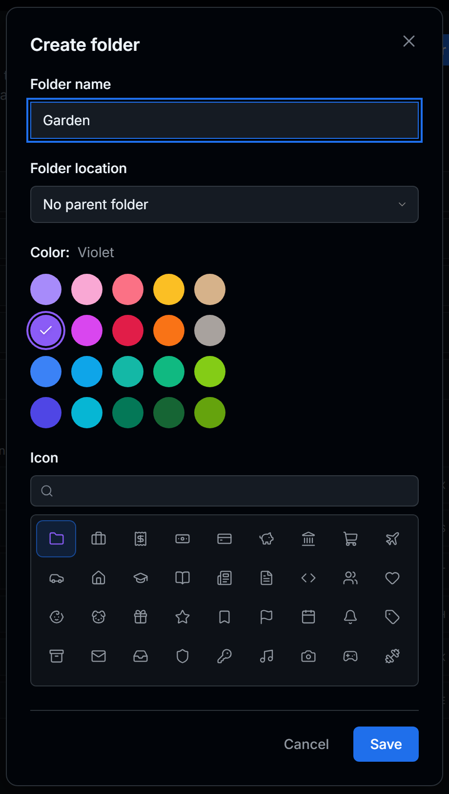
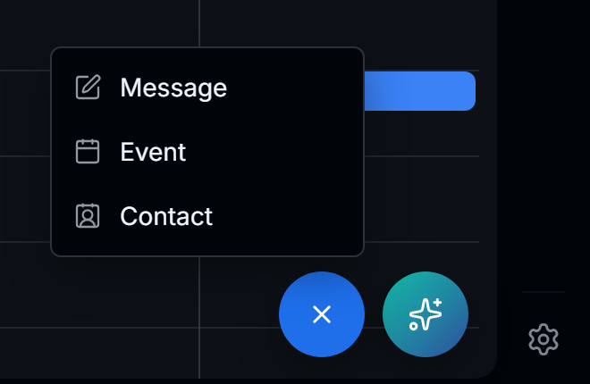
The whole workspace fits in your pocket.
A bottom tab bar, folders in a drawer, full-screen reading, and the + and Zajel buttons right under your thumb. Install it from the browser as an app.
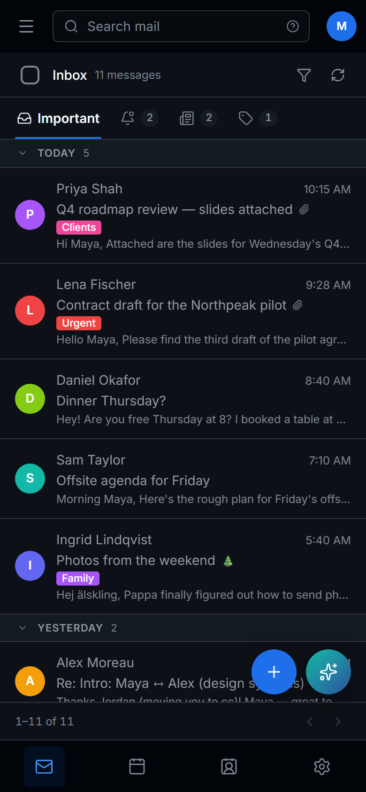
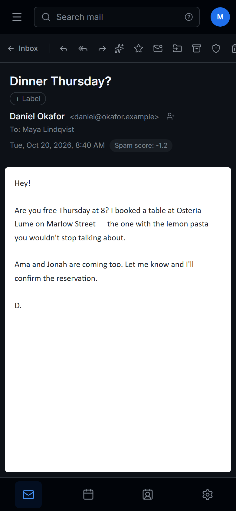
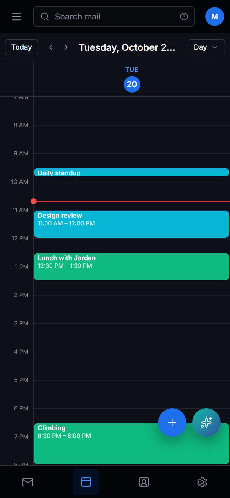
The details that make mail feel effortless.
Rules that run on the server
About a minute after mail lands, with every tab closed. See how many existing emails match before you save.
Auto-reply
A vacation message, deployed to your mail server as Sieve.
Trash that empties itself
After 7 or 30 days, if you want it to.
One-click unsubscribe
For every mailing list that supports it.
Sender avatars and trust
BIMI, favicons and Gravatar, cached once for every device. Trusted senders come from your address book.
Spam score in view
Stalwart's score and the authentication results beside every message, with reasons when one is flagged.
Notifications
New mail in the folders you choose, plus event reminders and changes.
Signatures
As many as you like, with a default for each identity.
Keyboard first
Search from anywhere, and drive the calendar without touching the mouse.
A clean copy of any message.
Installable
A Progressive Web App with its own icon and an offline page.
Settings that follow you
Preferences live on your server, keyed to your login, with export and import.
It holds the keys to your mail, so security comes first.
Your mail, contacts and calendars stay on your Stalwart server. Zajel Mail keeps its own secrets on the server too, and never in the browser.
A hardened master login
Hashed with scrypt (N=217), separate from your mail passwords, and locked for 15 minutes after 10 failed tries.
Passkeys
Sign in with WebAuthn, and see and revoke your active sessions.
Encrypted mail credentials
Linked account passwords are stored with AES-256-GCM, under a key derived from your own secret.
Sandboxed messages
Email renders in an isolated frame with scripts disabled, and remote images come through your server.
Secrets stay server-side
AI, Jev and task-app tokens are read only by server code. Session cookies are HttpOnly, Secure and SameSite=Strict.
An assistant that asks first
Zajel proposes replies, events, deletions and tasks. Nothing happens until you click.
Where your data goes
- AI: only to the service you configure, OpenAI with
store: falseor your own Ollama endpoint. - Jev: only for accounts you switch on. Each email is sent once, trimmed to the first 2,000 characters, and the app keeps the probabilities, never the text.
- Tasks and calendar changes: only after you confirm them.
Up and running in a few minutes.
You need a JMAP mail server. Zajel Mail is developed and tested against Stalwart, which also serves your calendars and contacts.
Get the code and the example configuration.
git clone https://github.com/odaiameera/zajel-mail.git cd zajel-mail cp docker-compose.example.yml docker-compose.yml
Set
ORIGIN,JMAP_BASE_URLand a secret indocker-compose.yml.openssl rand -base64 32 # → WEBMAIL_SECRETStart it, then open your URL to create your login and link your first account.
docker compose up --build -d
Install and copy the environment file.
git clone https://github.com/odaiameera/zajel-mail.git cd zajel-mail npm ci cp .env.example .env.local
Set
WEBMAIL_SECRETandJMAP_BASE_URLin.env.local, then start the dev server.npm run dev # → http://localhost:5173
Add Zajel
Set one key to run Zajel on OpenAI, or point it at Ollama.
OPENAI_API_KEY=sk-...
OPENAI_MODEL=gpt-5.6-luna # optionalAdd Jev
Add your TypeSafe key, then turn it on per account in Settings → Jev. No key yet? JEV_MOCK=1 lets you try it.
TYPESAFE_API_KEY=...
MIT licensed, built in the open.
Bug fixes, features, docs and design polish are all welcome. Start with the contributing guide, and report security issues privately.